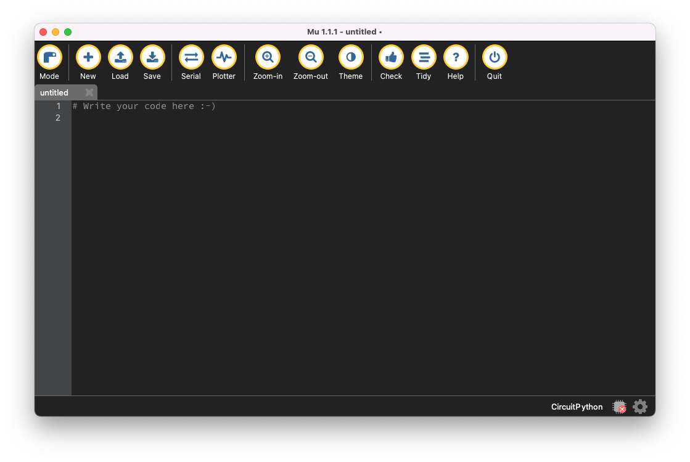

Before you write your first program, you need to complete one last step:
Should you run into issues during the installation process, you can find more detailed instructions on the website next to the download button for your operating system.

After completing these steps successfully, you should see a program window like the one above. You are ready to proceed to the following tutorial and program your first behavior!